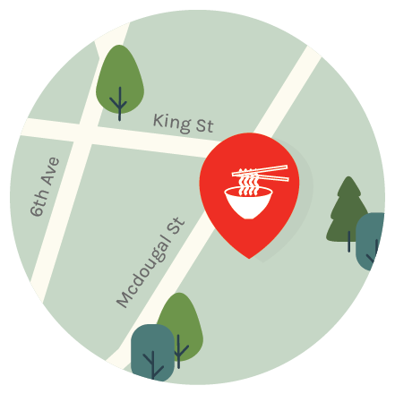
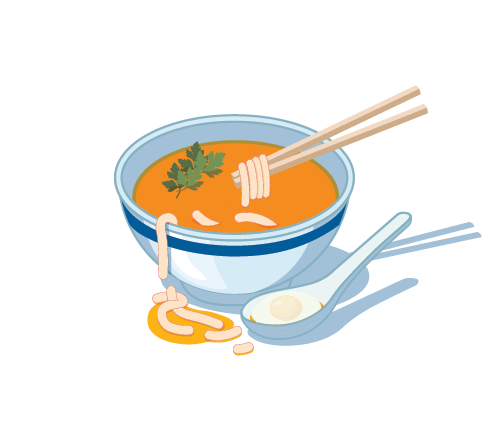

Raku
48 Macdougal St, South Village

Tantan Hot Udon
The soup comes in a heart broth, perfect for the cold city weather. The flavors are rich, extremely light, and not oily at all. The start of the bowl is most definitely the egg, topping the delicious dish.